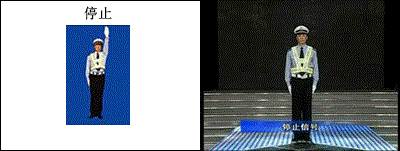
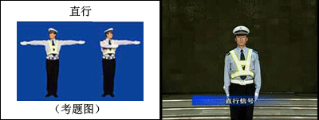
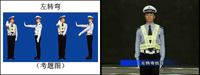
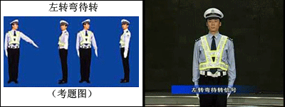
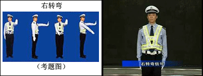
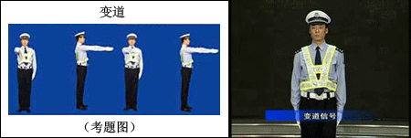
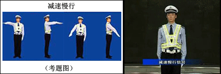
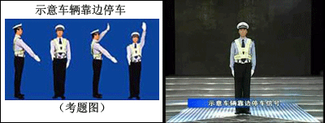

新交警手势动画
去年10月1日起施行的新交规，较之旧版交规考试除了删除了部分陈旧题目外，最大的变化就是新交警手势图的推出。新手势信号从过去的11种减少为8种。
公安部交管局负责人介绍，手势信号是道路交通安全法规定的交通信号之一，主要用于指挥、疏导交通，规范交通参与人的交通行为。原手势信号于1996年3月 18日发布施行。随着我国道路交通安全法的实施和交通状况的巨大变化，原手势信号已经不适应形势发展的要求，主要表现为原手势信号数量多、动作复杂，有的很少用，有的指示不明确，并且缺少对指挥棒指挥的规定等。
1、停止手势

2、直行手势

3、左转弯手势

4、左转弯待转手势

5、右转弯手势

6、变道信号

7、减速慢行

8、示意车辆靠边停车

总结下，手势主要有直行系、转弯系、停止系、停车系
直行系：手臂伸直，手指伸直；
转弯系：一只手掌弯曲！另一只手臂指向转弯方向；
停止系：向上伸出手掌阻止你
停车系：右手指地是让违章车停车！
记住要点：手掌弯曲就是转弯的手势！右手指地是让违章车停车！左手指地左转弯待转。
1 只要交警的手掌是向上垂直竖起（弯曲）的（转弯嘛），一定是转弯手势！
这时交警伸出的手臂指向哪，就是往哪个方向转弯（不难理解吧）。
2